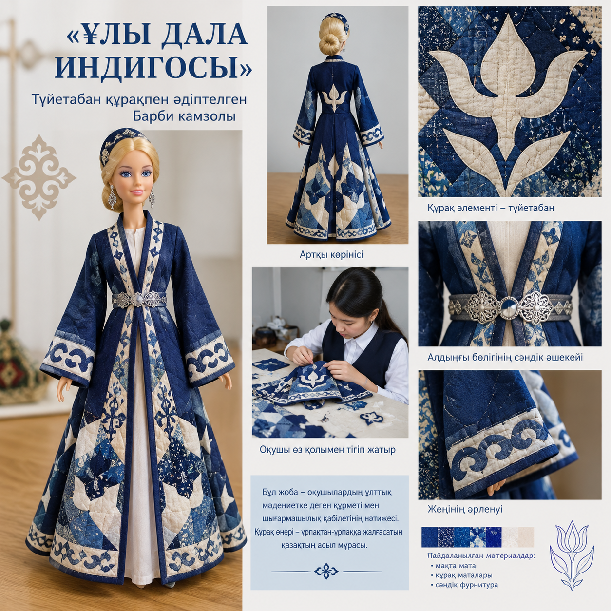
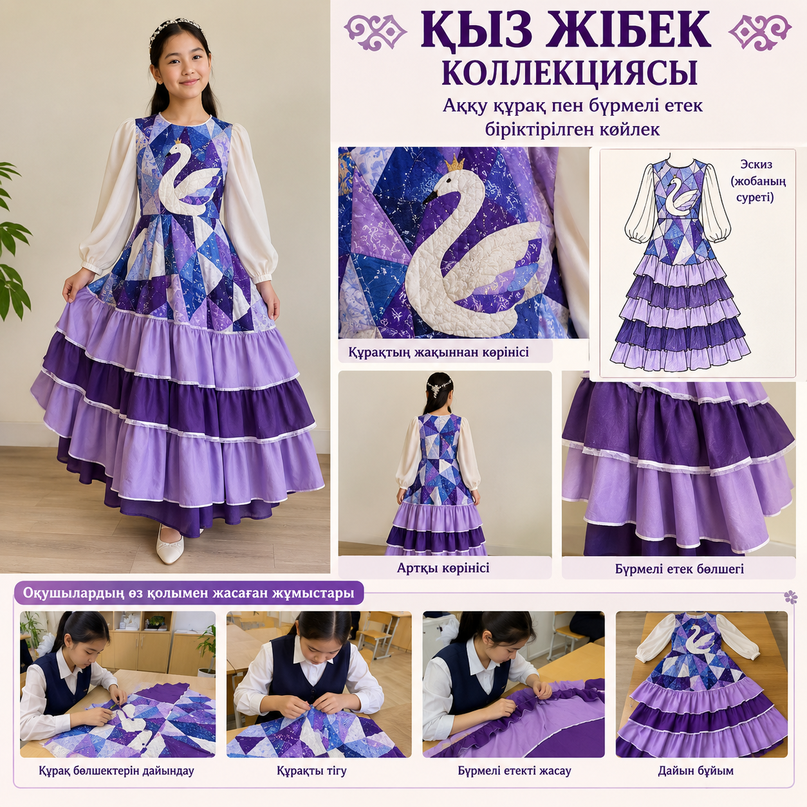
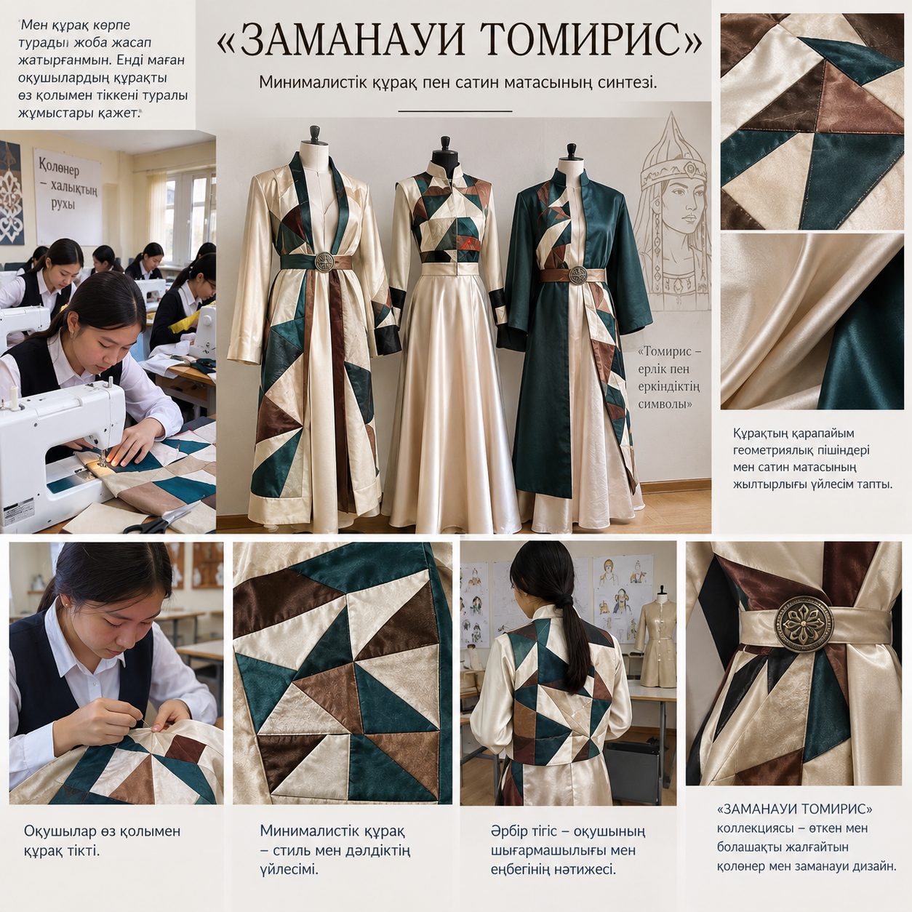
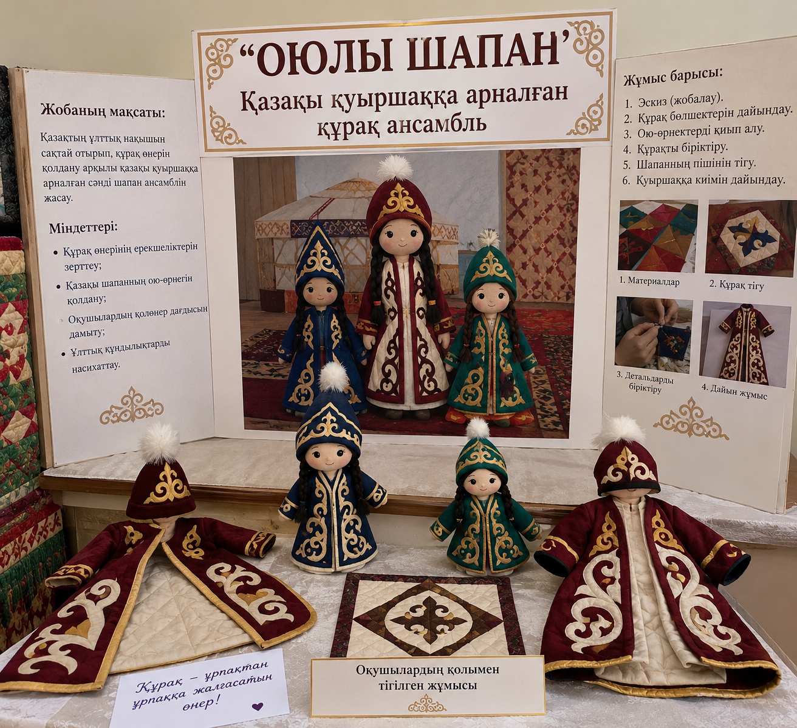

Дәстүрлі қазақ қолөнерін заманауи STEAM-жобалау технологиясымен ұштастыратын авторлық педагогикалық модель. Этно-дизайн, математикалық есептеу және цифрлық құрастыру бір алаңда!
Қазақы өрнектер сыры + Геометриялық есептеу + Ұсақ моторика + Сән дизайны
Құрақ құрау — тек мата қиындыларын біріктіру емес, ол ертеден келе жатқан қазақ халқының тіршілік философиясы, береке-бірліктің және қалдықсыз тұрмыстың (Zero Waste) көне символы.
«Құрақ» — тілдік мағынасында «құрау», «қосу», «бір бүтінге айналдыру» деген ұғымды білдіреді. Көшпелі қазақ тұрмысында бір де бір асыл матаның қиындысы ысырап болмаған. Әрбір қиынды қасиетті саналып, ұрпақтың амандығы үшін ниет етіліп тігілген.
«Құрақ құрағанның құты артады, шашылғаны жиылып, ұрпағы құралады» — дескен дана қариялар.
Үшбұрышты құрақтар (тұмарша) жас нәрестені және жаңа түскен келінді көз бен сөзден қорғайтын тұмар деп сенген.
Ұзатылатын қызға арнайы тігілетін «құрақ көрпе» — жаңа отауда ел-жұртпен тату-тәтті, бауырдай бірігіп кетуінің тілегі.
Қазақ шеберлерінің сан ғасырлық қолтаңбасы: Шахмат, Гүл, Жұлдызша, Ши және Аққу құрақтары. Әрбір бейнені басып, толық экранда тамашалаңыз және оның тарихи мәні мен мата құрамымен танысыңыз:
Төртбұрыштардың кезектесіп бірігуінен тұратын көне құрақ түрі. Өмір тепе-теңдігі мен үйлесімдіктің белгісі.
Көпжақты маталардан ашылған нәзік гүл тәрізді құрастырылатын сұлу өрнек. Көктем мен жастық шақтың нышаны.
Сегіз және алты бұрышты жұлдыз ретінде жасалатын көне геометриялық өрнек. Ашық аспан, бақ-береке мен жарық жолдың нышаны.
Матаның жіңішке жолақтарын шидей тізіп құрастыратын дәстүрлі тәсіл. Бірлік пен отбасы беріктігінің символы.
Аққудың мойны мен қанатына ұқсас иілген ерекше әсем өрнек. Тазалық пен мәңгілік адал махаббаттың көрінісі.
Қазақы бояулар мен симметрия режимдерін пайдаланып, өз авторлық құрақ көрпеңіз немесе қуыршақ киіміңіздің эскизін жасаңыз. «Айналық симметрия» функциясы нағыз шебер сияқты бір рет басумен ою тудырады!
Қазақ оюлары сияқты 4 жаққа бірдей өрнек салу:
«Құрақтан қуыршақ киіміне: идеядан бұйымға» инновациялық авторлық моделінің толық нормативтік-әдістемелік құжаттары, сабақ жоспарлары, бағалау дескрипторлары мен дидактикалық материалдары.
Көркем еңбек пен технология пәні бойынша 5-9 сынып оқушыларына арналған қолданбалы этно-дизайн және STEAM пәнаралық бағдарламасы.
Жаңартылған білім беру мазмұнына сай құрастырылған қысқа мерзімді сабақ жоспарлары және критериалды бағалау дескрипторлары.
Жобаның педагогикалық жаңалығы, тиімділік мониторингі, оқушылардың сыни және инженерлік ойлауын дамыту динамикасы.
Мұғалімдерге бір басумен барлық нормативтік құжаттарды, күнтізбелік-тақырыптық жоспарды, ҚМЖ үлгілері мен бағалау дескрипторларын компьютерге Word форматында жүктеп алу мүмкіндігі:
Жұмыстың үстінен басып, толық өлшемдегі суреті мен сипаттамасын ашыңыз:

image/zhumys1.png ҮЛКЕЙТУТүйетабан құрақпен әдіптелген Барби камзолы мен зерлі белдігі.

image/zhumys2.png ҮЛКЕЙТУАққу құрақ пен бүрмелі етек біріктірілген қуыршақ көйлегі.

image/zhumys3.png ҮЛКЕЙТУМинималистік құрақ пен сатин матасының үйлесімі (Neo-Ethno).

image/zhumys4.png ҮЛКЕЙТУҚазақы қуыршаққа арналған құрақ ансамбль (Зере әже стилінде).
Төмендегі бейнежазбада үйірме оқушыларының қалдықсыз технологиямен (Zero Waste) тіккен барлық этно-қуыршақ киімдері, бас киімдері және авторлық топтамаларының толық шеруі ұсынылған.
video/gallery.mp4